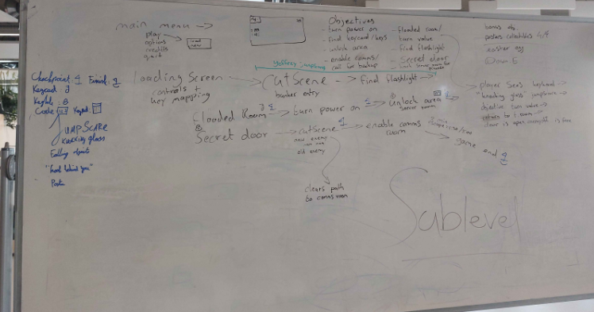
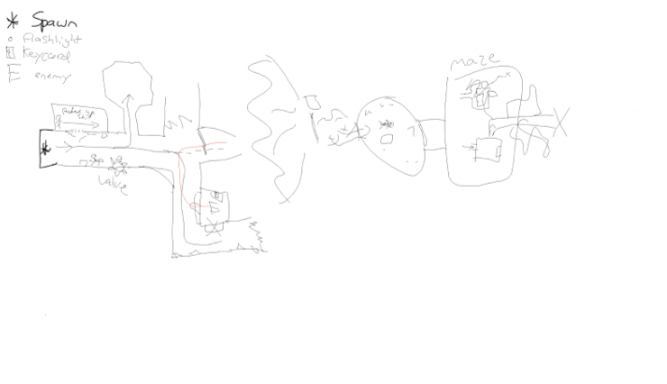
Core Idea
Explore, solve, survive. Getting this loop playable in the first weeks gave the three of us a shared base to build on.
An abandoned bunker horror game about exploring, surviving and never feeling quite safe.
Sublevel is a horror game set in an abandoned underground bunker. You wake up alone and have to find a way to escape before the creatures below find you. It was built in Unreal Engine 5 by a team of three in eight weeks.
Before anything looked good, we blocked out the bunker with simple shapes to test layout and pacing.


Explore, solve, survive. Getting this loop playable in the first weeks gave the three of us a shared base to build on.
A simple scare sequence designed to test the effectiveness of our sound design and pacing.
For Sublevel, I designed the player using player characters and blueprints.
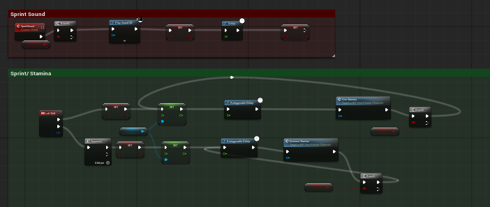
The movement in the game needed to avoid feeling too fast, as the player should feel a sense of fear. We arrived at this conclusion after several playtests, aiming to find the perfect balance of movement speed and stamina for our player within a horror environment.
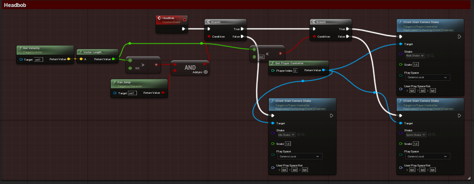
The camera and view feel make exploring the bunker natural without losing tension.
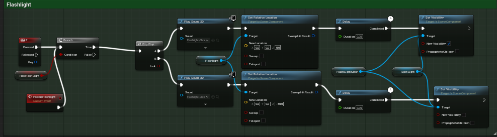
The bunker is dark to create a sense of abandonment and heighten tension for the player. Nevertheless, we decided to provide the first-person player with a flashlight. I designed this flashlight. Once the player picks it up, they keep it with them at all times—even if they die. The player is also given the option not to pick up the flashlight, or to turn the flashlight off.
Everything the player can touch runs on one unified Blueprint interaction system, so new interactables could be added quickly.
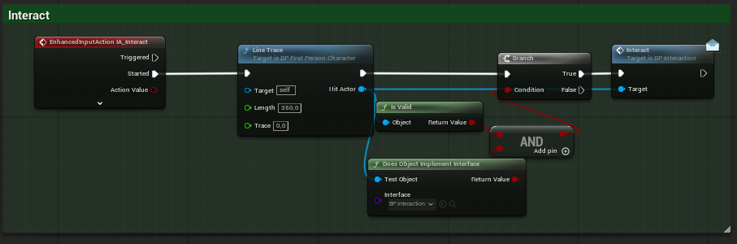
For the interactables, I opted to use a line-trace function—one that remains invisible during gameplay while still being fully functional. I also enlarged the hitboxes for these interactables, making it easier for the player to engage with the objects. Since I was also responsible for the audio, I incorporated sound effects and certain movements to further immerse the player in the game.
Explain how the door works here: opening, locked states and the sound that goes with it.
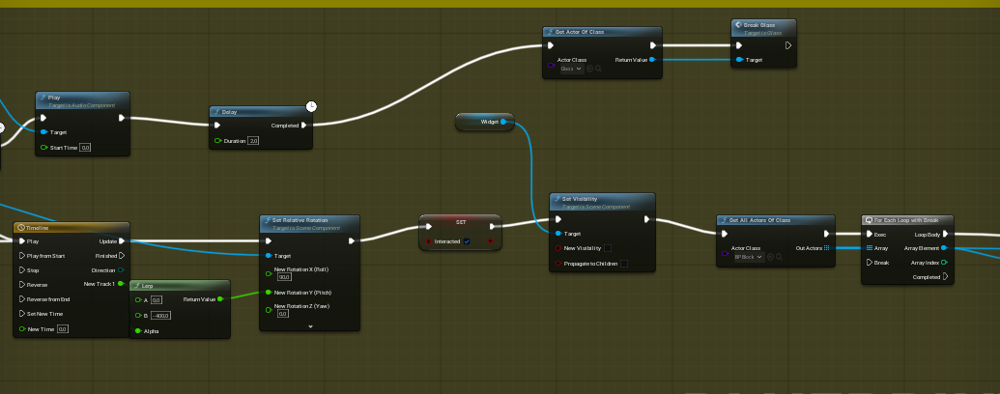
Explain how the valve works here: how the player turns it, what feedback they get and what it opens up.
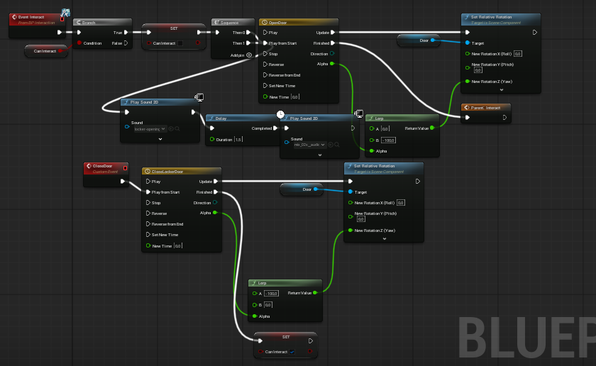
Explain the locker prototype here: how it started and what you would improve.
Ambience, interaction sounds, warning cues and distant bangs make the bunker feel alive. Turn the sound on.

Each area has its own ambience, and repeated sounds are varied so nothing becomes predictable.
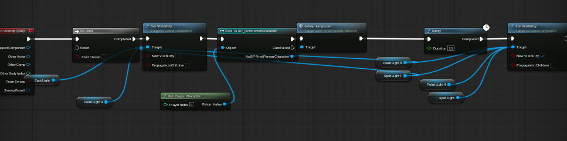
Audio cues and environmental events build anticipation before an encounter instead of relying only on sudden scares.
A minimal interface that never pulls the player out of the bunker.
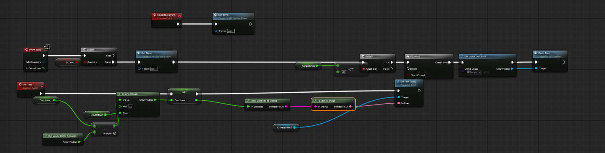
Prompts, pickups and menus that appear only when they are needed.
Prompts, pickups and menus that appear only when they are needed.
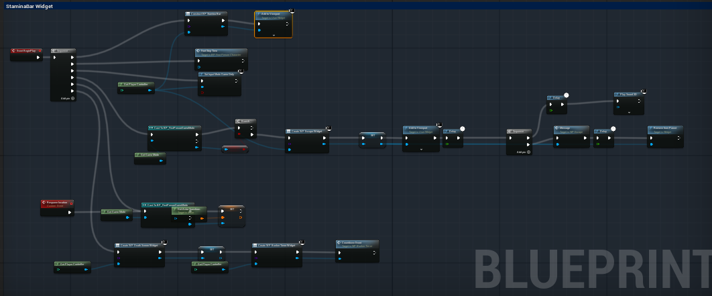
Prompts, pickups and menus that appear only when they are needed.
You wake up alone in an abandoned underground facility where a scientist once performed experiments on people. Explore the bunker, solve the obstacles in your way and find a route to the surface before the creatures below find you.
The bunker is more than a setting: its dark corridors, unsettling sounds, interactive objects and sudden scares make every step feel uncertain. You never know what is waiting around the next corner.
These systems helped turn the bunker from a static environment into a responsive and tense horror experience. Playtesting showed clearer navigation, stronger interaction, and a more uncomfortable atmosphere, which supported the intended horror experience.